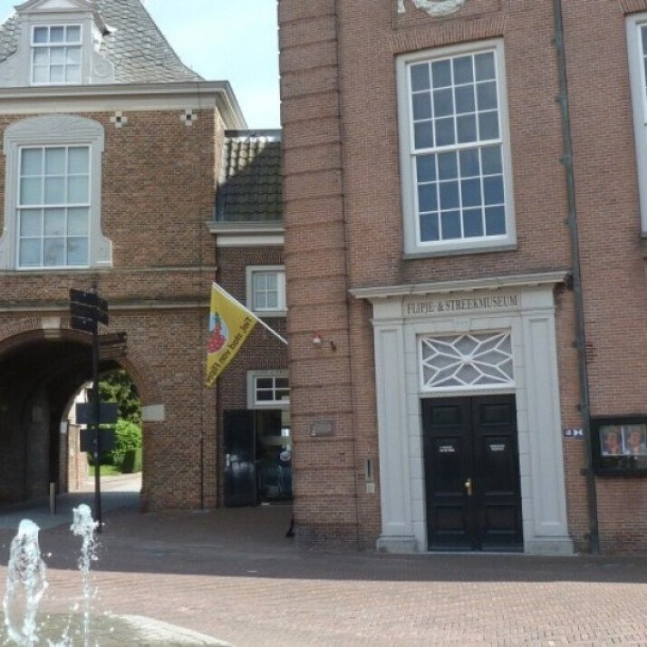
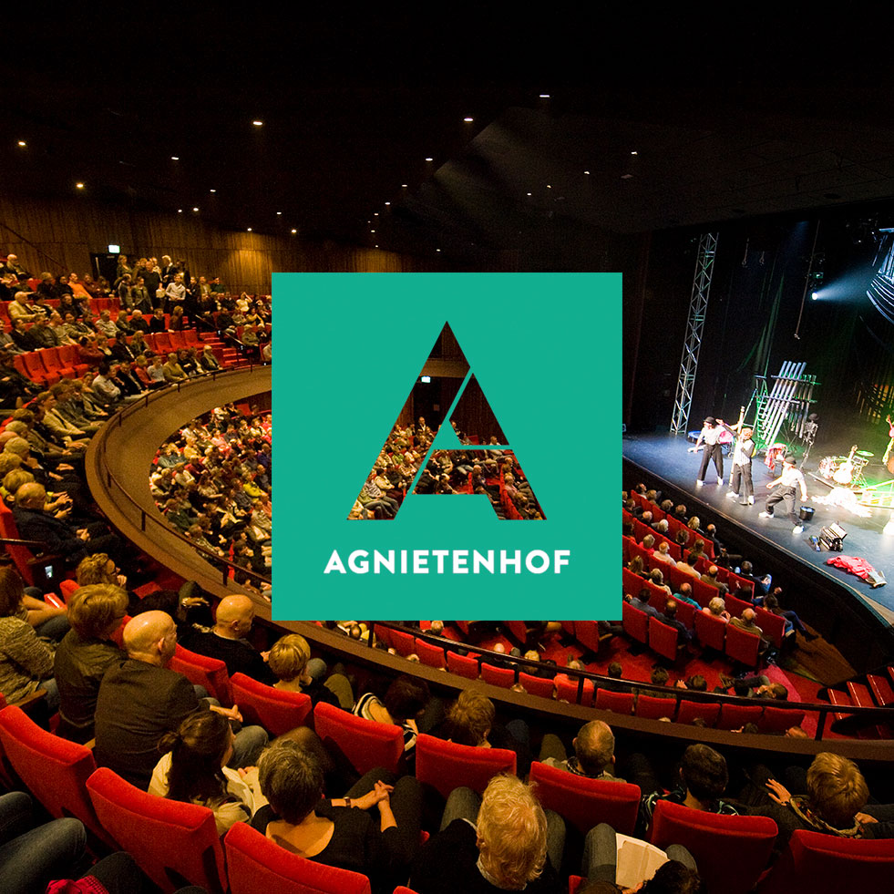

Local Attractions
Our town has many interesting places to visit that show its history and beauty. Whether you like culture or fun activities, there is something for everyone.
Our town has many interesting places to visit that show its history and beauty. Whether you like culture or fun activities, there is something for everyone.

